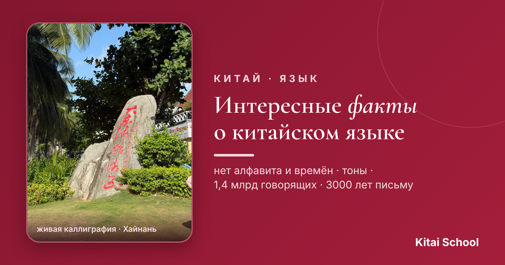
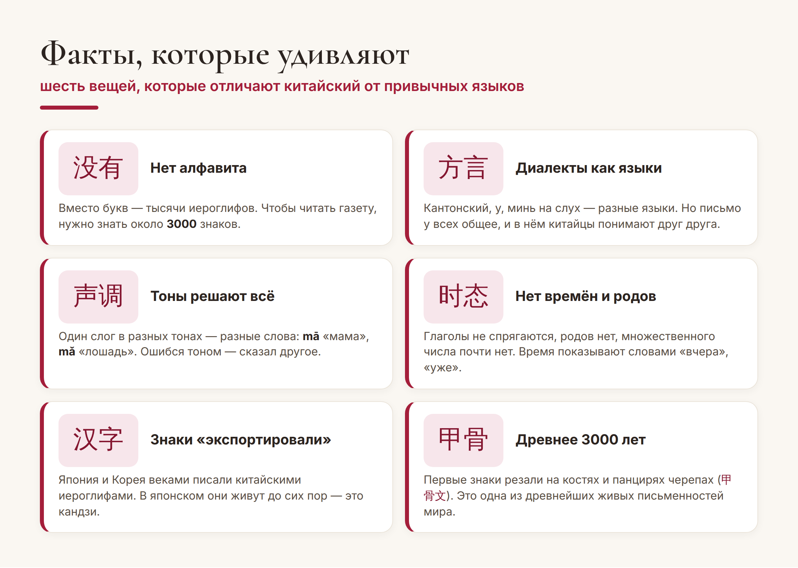
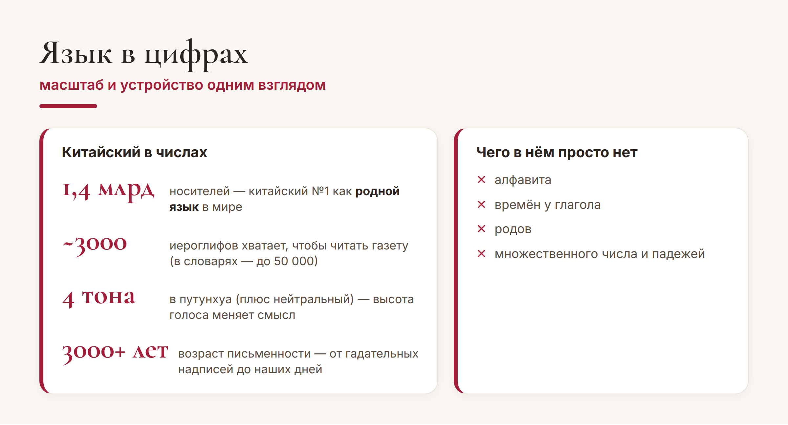

Китай · язык

Китайский язык кажется бесконечно далёким и загадочным — и не зря: он устроен совсем не так, как европейские языки. Нет алфавита, нет времён, зато есть тоны и тысячи иероглифов. Собрала для вас самые любопытные факты, от которых китайский становится ещё интереснее.
Сохраняйте — это готовая порция «вау-фактов», которыми приятно блеснуть в разговоре.
Начнём с того, что сильнее всего отличает китайский от привычных нам языков:

Особенно поражает история с диалектами. Человек из Пекина и человек из Гуанчжоу могут не понять друг друга на слух — их «диалекты» звучат как разные языки. Но стоит им написать одно и то же иероглифами — и они прекрасно поймут друг друга. Письмо в Китае объединяет страну сильнее, чем звучащая речь.
Теперь немного масштаба. Несколько чисел, которые говорят о языке лучше долгих объяснений:

Обратите внимание на правую колонку. То, что кажется «сложностями» китайского, на деле — то, чего в нём нет: не нужно учить спряжения, склонения, роды и падежи. Глагол 去 (qù, «идти») выглядит одинаково и для «я иду», и для «он пошёл» — время добавляют отдельным словом. В этом смысле грамматика китайского даже проще нашей.
Главный вывод из этих фактов — приятный: китайский не такой страшный, каким кажется. Да, придётся выучить тоны и иероглифы. Но взамен вы получаете язык без времён, родов и падежей — и письменность, за которой стоят тысячи лет истории и красивая логика.
Кстати. Иероглифы окружают нас и за пределами Китая — в японских вывесках, в корейских именах, в татуировках и на сувенирах. Начав учить китайский, вы вдруг начинаете «читать» мир вокруг — и это невероятно затягивает.
Вот таким получается китайский: древний, огромный и при этом на удивление стройный. Надеюсь, эти факты сделали его для вас чуть ближе — а там, глядишь, захочется выучить и первые слова.
Пусть язык вас удивляет! 学无止境。